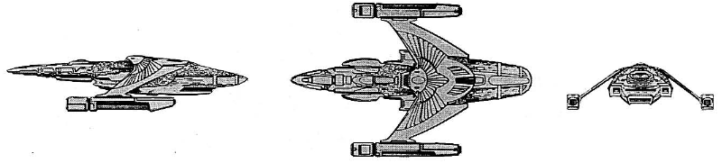

Z-1 Nova-class Battle Cruiser (RSE)

Battle Stats
Engines and Superstructure
Total Power Units - 76 (Warp Engines - 2x24, Impulse Engines - 28)
MPR - 5/1
Superstructure - 38
Maximum Warp - 3
Industry Points to Build - 12
Beam Weapons (Disruptors)
Max Power - 9
Firing Chart - V
Arcs - 2F/P, 2F, 2F/S, 2A/S, 2A/P
Bonuses - +3(1-10) +2(11-16) +1(17-21)
Missile Weapons (Plasma Torpedoes)
Power to Arm - 1
Damage - 10
Firing Chart - Q
Arcs - 4F, 1P, 1S, 2A
Deflector Shields
Max Shield Power - 18
SPR - 1/3